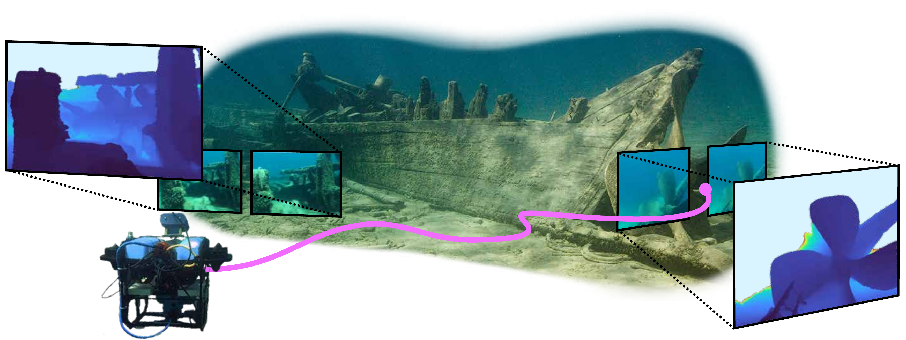
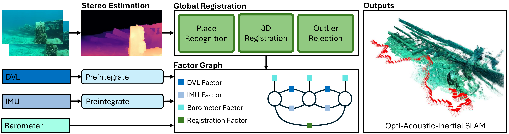
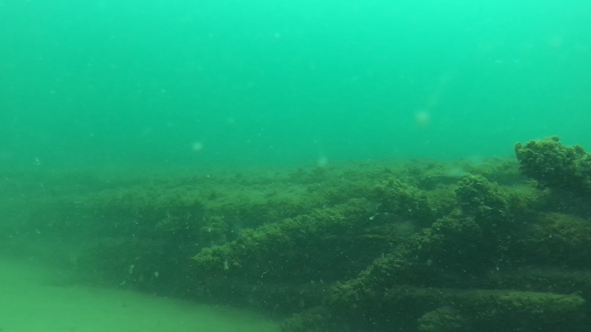
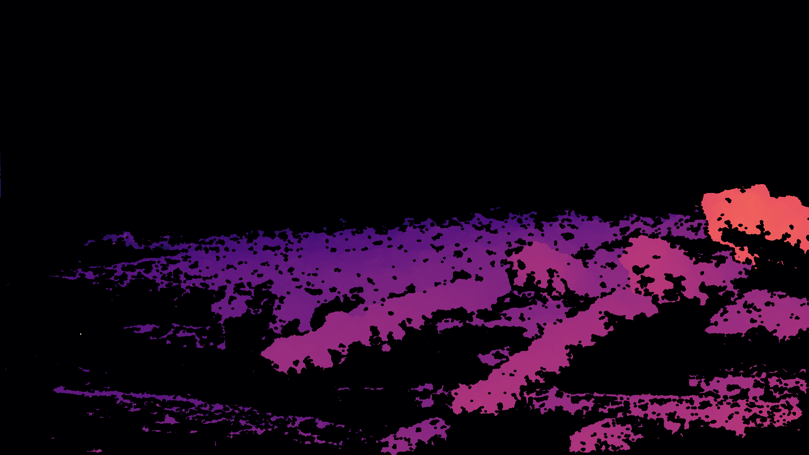
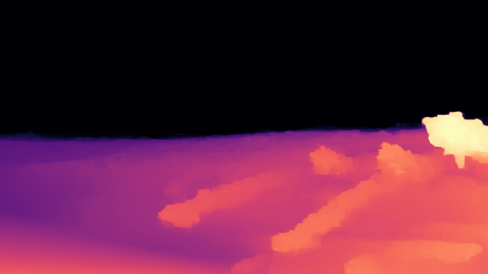

* Equal contribution

Localization and mapping are core perceptual capabilities for underwater robots. Stereo cameras provide a low-cost means of directly estimating metric depth to support these tasks. However, despite recent advances in stereo depth estimation on land, computing depth from image pairs in underwater scenes remains challenging. In underwater environments, images are degraded by light attenuation, visual artifacts, and dynamic lighting conditions. Furthermore, real-world underwater scenes frequently lack rich texture useful for stereo depth estimation and 3D reconstruction. As a result, stereo estimation networks trained on in-air data cannot transfer directly to the underwater domain. In addition, there is a lack of real-world underwater stereo datasets for supervised training of neural networks. Poor underwater depth estimation is compounded in stereo-based Simultaneous Localization and Mapping (SLAM) algorithms, making it a fundamental challenge for underwater robot perception. To address these challenges, we propose a novel framework that enables sim-to-real training of underwater stereo disparity estimation networks using simulated data and self-supervised finetuning. We leverage our learned depth predictions to develop \algname, a novel framework for real-time underwater SLAM that fuses stereo cameras with IMU, barometric, and Doppler Velocity Log (DVL) measurements. Lastly, we collect a challenging real-world dataset of shipwreck surveys using an underwater robot. Our dataset features over 24,000 stereo pairs, along with high-quality, dense photogrammetry models and reference trajectories for evaluation. Through extensive experiments, we demonstrate the advantages of the proposed training approach on real-world data for improving stereo estimation in the underwater domain and for enabling accurate trajectory estimation and 3D reconstruction of complex shipwreck sites. Upon publication, code, real-world underwater data, and simulated training data will be made publicly available.

We take as input measurements from a barometer, IMU, DVL, and a stereo image pair. We maintain an acoustic-inertial pose graph that preintegrates measurements to maintain a pose throughout operation. In parallel, we use our finetuned underwater stereo network to produce metric depth maps. These depth estimates and stereo images are used to perform geometric tracking to perform global registration, and reduce drift over operation, producing accurate trajectories and dense maps during operation.
Compare disparity predictions from different stereo depth estimation methods. Select a scene and click on method buttons to view their predictions alongside the ground truth.



Below is an interactive viewer of the SLAM trajectory estimates of our method comapred against baseline methods. In addition, we visualize the ground truth trajectory and reconstructed point cloud meshes.